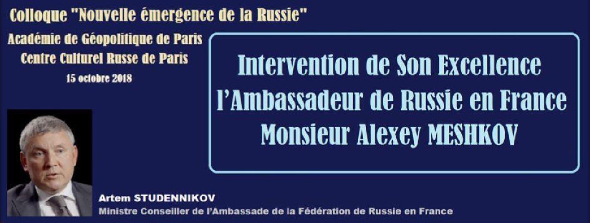
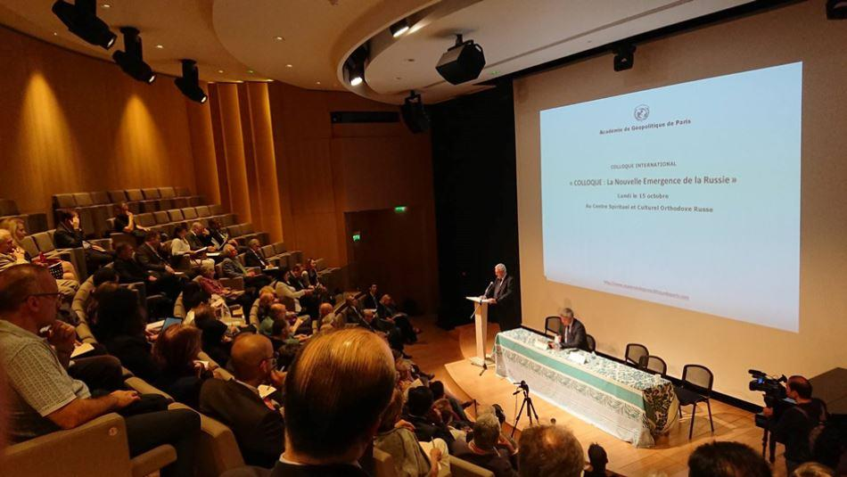
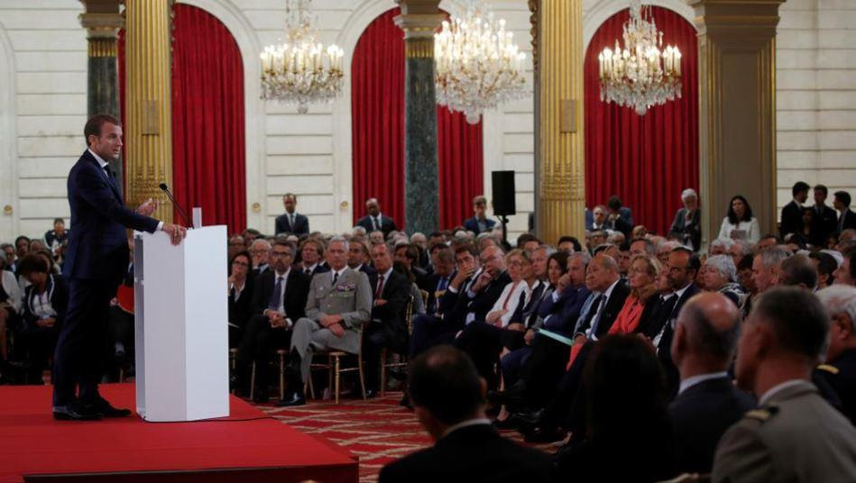

Intervention de Son Excellence l’Ambassadeur de Russie en France Monsieur Alexey Meshkov
par Artem STUDENNIKOV

Je tiens à remercier la direction de l’Académie géopolitique de Paris de l’initiative d’organiser cette conférence et de l’attention que votre prestigieuse institution réserve à la Russie et à nos relations bilatérales avec la France.
Notre rencontre porte sur la nouvelle émergence de la Russie. Regardez un peu l’éclat avec lequel les bulbes du Centre culturel et spirituel orthodoxe russe où nous sommes réunis se détachent sur le ciel parisien. Je pense que vous conviendrez qu’il est difficile de trouver un autre endroit qui incarnerait aussi brillamment, dans le sens premier du terme, l’émergence de mon pays.
Sans vouloir donner le ton à la conférence, encore moins anticiper ses conclusions, je prendrai la liberté de faire quelques remarques introductives.
Je n’ai pas de doute que je n’ai nul besoin de m’étendre devant cette assemblée de connaisseurs sur le chemin parcouru par la Russie en dernier quart de siècle ni de rappeler l’état dans lequel elle se trouvait dans les années 1990. En regardant en arrière, il devient clair qu’à l’époque nous avons marché sur le bord du précipice. La Russie a commencé à se remettre sur ses pieds dans les années 2000 et est devenue la sixième économie du monde, un acteur fort et indépendant dont même nos plus farouches détracteurs reconnaissent le rôle indispensable dans la résolution de tout problème international important. Les Occidentaux s’interrogent souvent sur les ressorts du si grand soutien populaire dont bénéficie le Président Vladimir Poutine. Sauf qu’il n’y a aucun secret. Les gens ont tout simplement pu constater dans leur chair l’évolution de leur pays au cours des dernières années.
Le retour de la Russie sur la scène internationale s’est opéré dans un contexte historique particulier de la formation d’un monde polycentrique. Nous voyons les nouveaux centres d’influence globaux et régionaux en train de s’affirmer en Asie, en Amérique Latine. Des processus dynamiques se déroulent en Afrique. L’ordre occidentalo-centrique qui a duré 500 ans est en passe de rejoindre le passé. Il n’est pas étonnant que certains le vivent mal.
En intervenant à l’Assemblée générale des Nations Unies le Ministre russe des affaires étrangères Sergey Lavrov a dit : « Il y a d’un côté le renforcement des principes polycentriques de l’ordre mondial, la formation de nouveaux centres de la croissance économique, la volonté des peuples de préserver la souveraineté. De l’autre – le désir d’un certain nombre d’États occidentaux de conserver le statut autoproclamé de leaders mondiaux, de freiner l’irréversibilité du processus objectif de la formation de la multipolarité. Tous les moyens sont bons pour atteindre cet objectif, y compris le chantage politique, la pression économique et la force primitive.
Ces actions illégales ont pour conséquence la dépréciation du droit international ».
La transition vers un monde polycentrique est un processus objectif. Les tentatives visant à le contenir sont vouées à l’échec. Mieux encore, elles résultent souvent dans son accélération. L’exemple des sanctions antirusses qui ont stimulé le développement de notre industrie et agriculture en est une illustration. Quelles sont les conséquences du désir des Etats-Unis de se servir de sa monnaie nationale afin de faire pression sur d’autres pays ? Outre la Russie et la Chine, l’Union européenne a reconnu le besoin de dedollariser l’économie mondiale.
Sur ce plan il est difficile d’être en désaccord avec le Président Emmanuel Macron qui à l’Assemblée générale des Nations Unies militait en faveur d’un ordre mondial multipartite basé sur le droit international et le jeu collectif au lieu de la règle du plus fort.
Contrairement aux temps de la guerre froide, la polycentricité d’aujourd’hui n’est pas idéologique, quelles que soient, par exemple, les différences qui existent entre la Chine et les Etats-Unis. La montée en puissance de nouveaux centres d’influence s’opère dans une grande partie justement suite au passage du flambeau du développement économique aux autres régions du monde. Par conséquent il ne s’agit pas d’une offensive à l’encontre de la démocratie, contrairement aux représentations faites parfois en Occident. Il s’agit de la fin de la domination sans partage d’un groupe des États sans que leur modèle de société ne soit concerné.
Il y a en France un vif débat sur les possibles implications du retour de la Russie. À en juger par les derniers rapports gouvernementaux, d’aucuns y voient un défi, voire une menace. D’autres regardent la Russie en tant que partenaire naturel, facteur important de la stabilité et la sécurité globale.
À ce propos, je souhaite rappeler que dans les années 1990 la Russie affaiblie a été obligée de se mettre à l’écart des affaires. On a connu l’avènement d’une époque qu’Emmanuel Macron a qualifiée dans son allocution devant l’Assemblée générale de période de la domination d’une superpuissance. Les Américains et leurs alliés ont reçu carte blanche pour gouverner le monde. Comment s’en sont-ils servis ? Comme un éléphant dans un magasin de porcelaine. J’ai la conviction que la Russie est retournée à temps pour arrêter cette succession des destructions d’États au Moyen- Orient, à commencer par la Syrie.
Une Russie indépendante, forte, sûre d’elle n’est pas du goût de tout le monde. Quelles n’ont pas été les accusations portées à l’encontre de mon pays au cours de toutes ces années. Violations des droits de l’homme. Ingérence dans les affaires internes des états occidentaux. Agressions de pays voisins. Ces derniers temps tout le monde a attrapé l’espionite et aggrave l’hystérie autour des pirates informatiques et services secrets russes.
Je conseille toujours à ces accusateurs de regarder dans un miroir. De chercher la poutre dans son œil. Est-ce la Russie qui a bombardé la Serbie ? Qui a créé le précédent de la reconnaissance de l’indépendance du Kosovo ? Qui a envahi l’Irak et a détruit la Libye ? Qui a soutenu les islamistes en Syrie et les néonazis en Ukraine ? Peut-être y en a-t-il qui croient que les pays de l’OTAN n’interfèrent pas avec les affaires internes de la Russie, ne l’espionnent pas, ne la visent pas par des attaques informatiques ?
Nous avons une blague à ce sujet. On informe le secrétaire général de l’ONU que la Russie est devenue plus agressive. A sa question de savoir pourquoi on lui explique qu’elle a rapproché son territoire des bases militaires de l’OTAN.
Ce n’est pas l’émergence de la Russie qui est à l’origine de la situation en Europe et dans le monde que les experts ont déjà baptisé « la deuxième guerre froide ». Après l’éclatement de l’URSS nous espérions sincèrement la formation d’un espace commun sécuritaire, économique et humain de l’Atlantique à Vladivostok dans la droite ligne des idées de Charles de Gaulle sur l’Europe de l’Atlantique à l’Oural. Or, déjà dans les années 1990 l’Occident a choisi une autre voie, celle du renforcement de l’OTAN et de sa progression vers nos frontières, de la lutte pour des sphères d’influence dans l’espace post-soviétique. La reconnaissance de l’Ossetie du Sud et de l’Abkhazie en 2008, la réunification avec la Crimée en 2014 n’ont été que réaction inévitable de la Russie à la politique menée par les pays occidentaux. Nous avons essayé de suivre la logique de l’intégration. Nous avons été forcés de passer à la logique de l’autodéfense et de la protection de nos intérêts sécuritaires fondamentaux.
A l’occasion de la conférence des ambassadeurs français Emmanuel Macron disait que le statut quo continental ne pouvait satisfaire personne. Il appelait à revoir l’architecture de la sécurité européenne à travers un dialogue avec la Russie, et non contre elle. Nous ne pouvons que saluer cette attitude réaliste et perspicace, d’autant plus que ces dernières années la Russie n’a eu de cesse de proposer de construire ensemble un nouveau système non-confrontationnel de la sécurité en Europe basé sur les principes de l’égalité et de l’indivisibilité de la sécurité.
Nous sommes prêts à travailler ensemble dans cette direction. Il est temps de renoncer à la propagation de l’image de l’ennemi, de surmonter la méfiance réciproque. J’ai la conviction que tout comme à l’époque de la guerre froide la Russie et la France pourraient devenir des locomotives de la réforme de la sécurité européenne, d’une nouvelle détente, si vous voulez. Bien naturellement, les chances de ce processus d’aboutir seront conditionnées par la capacité de l’UE et de ses principales puissances d’agir indépendamment des Etats-Unis, selon les intérêts de notre maison commune européenne, plutôt que ceux d’un Oncle Sam d’Outre- Atlantique.
J’espère que cette conférence contribuera à forger en France une réaction correcte à l’égard de l’émergence de la Russie qui ne constituerait pas une menace, mais serait un renforcement d’un partenaire naturel et sur, avec lequel elle pourra bâtir une économie plus compétitive, renforcer sa sécurité et son autonomie stratégique et, en général, regarder plus sereinement en face les défis du XXI siècle.
Partager cette page